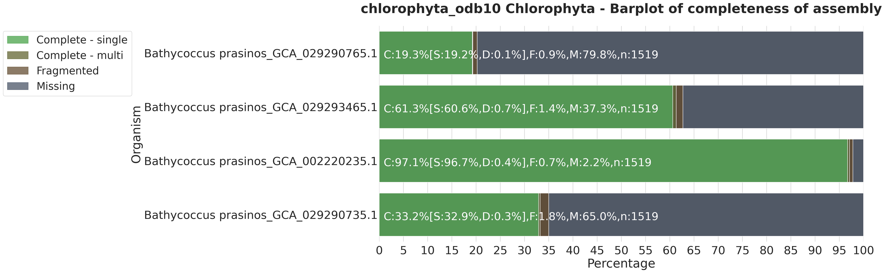
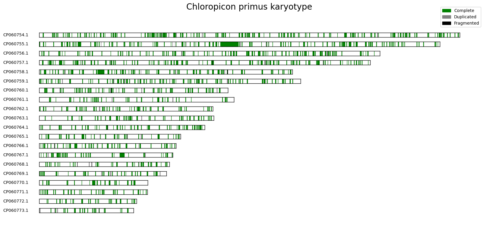
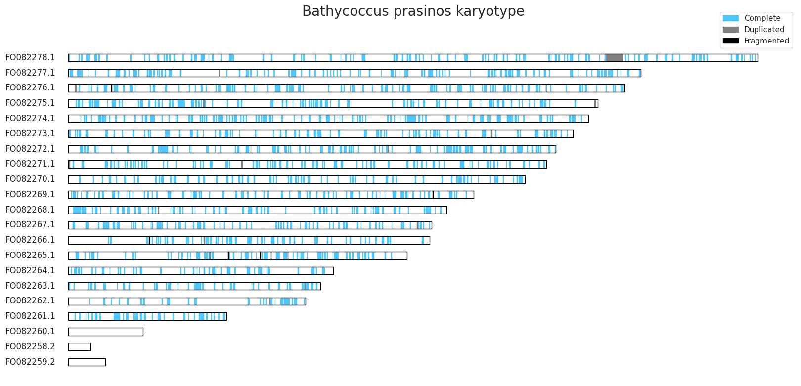
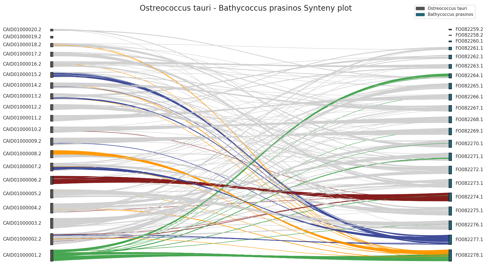
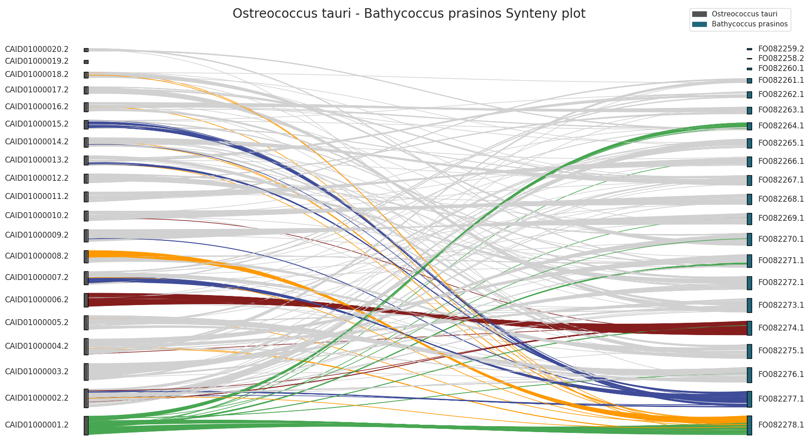

Functionalities
BuscoPlotPy allow you to generate several kinds of plots that can help you to interpret correctly your BUSCO’s analysis.
BUSCO completeness barplot
This function generates a barplot to visualize the completeness of assembly for different organisms based on BUSCO summary json file. The function takes in input a dataframe that contains all (json summary file) informations about all the analyzed organisms. In each row there are all BUSCO’s informations about the organism.
The input dataframe can be obtained by using the [load_json_sumary()](#load-busco-summary-file) function.
Location: /buscoplotpy/graphics/organism_busco_barplot.py
BUSCO karyotype plot
A karyotype plot is a graphical representation of the chromosomes of an organism arranged in a standard format based on their size, shape, and banding patterns. It provides a visual overview of the complete set of chromosomes present in an individual or a species.
BUSCO searches the provided genome or transcriptome against the reference database of universal single-copy orthologs. It identifies and counts the number of BUSCOs that are present, duplicated, fragmented, or missing in the target assembly.
Complete BUSCOs: Genes that are found in the assembly exactly once, indicating a complete representation.
Duplicated BUSCOs: Genes that are found more than once, suggesting potential gene duplications in the assembly.
Fragmented BUSCOs: Genes that are present in the assembly but are incomplete or fragmented.
Missing BUSCOs: Genes that are entirely absent from the assembly.
The karyotype plot can help us to visualize position (and the status) of found BUSCOs on the relative chromosomes. This can be done by using the karyoplot function.
 Location: /buscoplotpy/graphics/karyoplot.py
BUSCO synteny plot
 
